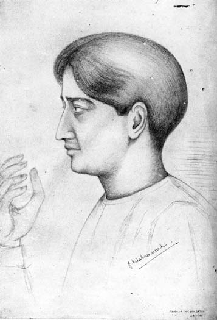

‘The Triple Stream’
1THE ASHRAM
Eighteen years ago, soon after his return from South Africa, Gandhiji founded the Satyagraha Ashram. It was the first tangible expression, on Indian soil, of his yearnings after a purer and more exalted life. The present writer has vivid memories of Gandhiji's address to a students’ gathering at Madras, in which he ‘poured forth his soul’ in an effort to outline the ideals of the Ashram. It was not yet in being, but one could sense the coming of a new era in Indian public life, when service to the country was to be not the pastime of an idle hour but the surrender of everything held dear. The body, the mind, and the spirit of the worker were to be disciplined with the utmost rigour; all thought of self was to be eliminated; suffering was to be courted and cheerfully borne. Since its inception, the Ashram has, in the main, justified the hopes of its great founder. Around him have gathered men and women inspired by his ideals, and prepared to follow him to the ends of the earth. The Gujarat Vidyapith, the All-India Spinners' Association, the Anti-un-touchability Board, and other important organisations took their birth at the Ashram. In fact, the Ashram has functioned as the life-centre of Modern India.
Today the Mahatma feels that he must give up even this. Thousands have lost their all in the struggle. Why then should he not voluntarily surrender the Ashram–the last little bit of possession that, by any stretch of language, might be called his? It is in this frame of mind that the decision has been taken to disband the Ashram, and to permit the inmates to offer Satyagraha. Truly does this illustrate a great spiritual truth–that to win all, one must lose all.
BA CK TO PRISON
From the Sabarmati Ashram to the Sabatmati prison is just a step. It has ever been so in Gandhiji's life. At dead of night the Police wake him up. With the mark of kumkum on his forehead, and the praise of a true Vaishnava on his lips, he goes back to prison. Events have moved with lightning rapidity during the past few weeks. There were acute differences amongst the Congress leaders assembled at Poona last month. But all were agreed that the Viceroy ought to be approached with a view to explore the possibilities of peace with honour. The Viceroy summarily turned down the simple request for an interview. It is doubtful if, in the present temper of the Government, any useful purpose would have been served by an interview. The Government, however, put themselves in the wrong by refusing even to have a frank talk about the impasse in Indian politics. The Congress is a rebel organisation; it must lay down arms, and ask for forgiveness. Lord Willingdon is not a blunderer like his predecessor. He will rule with a firm hand, and save India for the Empire. The present is the darkest moment in the long history of Indo-British relations. For the Congress as well as for the Government, the supreme test came last month. It was open to the Congress, acting on the advice of tried workers from every province, to have called off civil disobedience unconditionally, without any reference to the attitude of the Government. That would have enabled the nation to gather fresh energy, and to re-organise its forces for constructive work in diverse fields. For, except as a symbol of protest against the continued obduracy of Government, the resumption of civil disobedience is not likely to achieve any objective results. Government on their side could have taken the opportunity offered by the Poona resolution in favour of an interview between Gandhiji and the Viceroy. The love of prestige overpowered the love of peace. Else, the conditions prevailing at the time of Gandhiji's return from the second Round Table Conference might have been restored. But it is idle to speculate. Perhaps the time was not ripe for peace; and war–albeit non-violent war–has been resumed.
A CREDITORS MEETING
If the Congress has not achieved its object, neither has the Liberal group at the Joint Parliamentary Committee. Every attempt to improve the White Paper scheme, in a sense favourable to Indian aspirations, has proved futile. An unending series or diehard witnesses, representing the Services and other vested interests, tendered evidence, the main burden of which was that Indians could not be entrusted with even the power provided for in the White Paper. The Indian delegates were put on their defence and virtually called upon to make out a case for further reforms. Mr. Jayakar compared the Committee to a creditors’ meeting, and well might he so term it. India is to get nothing out of the whole show, except on condition of safeguarding all possible and impossible interests. Dominion Status is not to be thought of. Everybody is now concerned to save the White Paper scheme from the onslaught of the Churchill group. Sir Samuel Hoare was thanked profusely, because he stood up like a hero and defended the White Paper. Sir Tej Bahadur Sapru left England even before the adjournment, and is resolved not to go back. He envisages for himself a life of obscurity as a provincial lawyer. For the time being, the Government may congratulate themselves on having put out of action the Congress as well as the progressive group at the Joint Parliamentary Committee. But is it wise to render powerless the only elements that stood between the country and the terrorists?
MR. SEN-GUPTA
Death on the field of battle was what the Kshatriya warriors of Ancient India coveted most. To do one's duty and to fall fighting in a great cause, is the path to everlasting glory. The entire Indian nation mourns today the passing of an illustrious leader. He was a State prisoner till death freed him. Mr. Sen Gupta gave up his all, that the Motherland might achieve freedom. Sacrifices like his are rare, even in an epoch of great sacrifices. He is now gathered to the band of heroes whose memory is a priceless possession of the race–the Lokamanya, Motilal, and Chittaranjan. His life is a symbol of what India is passing through. Her sons are not in the seats of power; they voluntarily elect to fill the prisons. It is a situation which the British rulers of India cannot contemplate with any pleasure or satisfaction. If the leaders of thought, the wisest and best in the land, feel instinctively that the prison is the only honourable place for them, the men in authority ought to pause and think of other remedies than strong and yet stronger measures.
THE TELUGU ENCYCLOPEDIA
The late K. V. Lakshmana Rao was engaged on a most important piece of work when he was snatched away prematurely. The Vijnana Sarvasvam was meant to be his greatest contribution to Telugu culture. For several years after his death, there was no one with the requisite resources and vision willing to continue the task. But Mr. K. Nageswara Rao, whose hands were full with many other undertakings of public usefulness, came forward most nobly and offered to publish the Encyclopedia. Assistants like Somasekhara Sarma and Velala Subba Rao have given of their best to make it a literary success. The first volume published recently is a monument of labour well-spent, and of devoted and minute attention to every aspect of knowledge. Mr. Nageswara Rao has put himself to considerable trouble and expense, and has spared no pains to make the Volume attractive. Coloured plates of the Ajanta frescoes and innumerable illustrations add to the value of the publication. We understand the second volume is in progress, and we have no doubt that every effort will be made to bring out the later volumes in rapid succession. The Andhras ought to be grateful to Mr. Nageswara Rao for this, as for many other benefactions.
THE FRONTISPIECE

J. Krishnamurti
(From a sketch by K. Ananda Mohan Sastry)
When Mr. J. Krishnamurti visited Ahmedabad last February, he was the guest of Seth Ambalal Sarabhai. Mr. K. Ananda Mohan Sastry, art-teacher in Sethji's private school, sketched Mr. Krishnamurti as he was giving a talk. We reproduce the sketch with pleasure. Young Ananda Mohan Sastry is a highly talented artist who received his early training at the Andhra Jateeya Kalasala, Masulipatam. Later, he worked with Mr. K. Venkatappa, the great Mysore artist. Two of Mr, Sastry's paintings were exhibited recently in Paris, and won encomiums from connoisseurs of art. The present sketch which ‘takes’ Mr. Krishnamurti in profile and brings out prominently his uplifted hand, is in Mr. Sastry's best style.
1
1st August